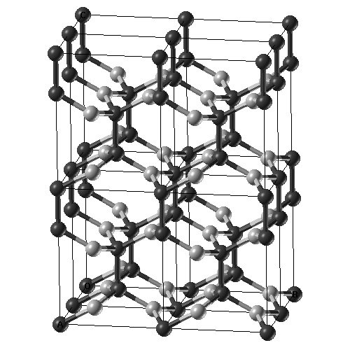
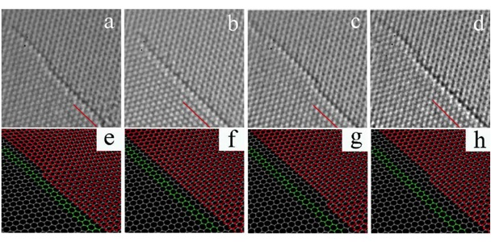
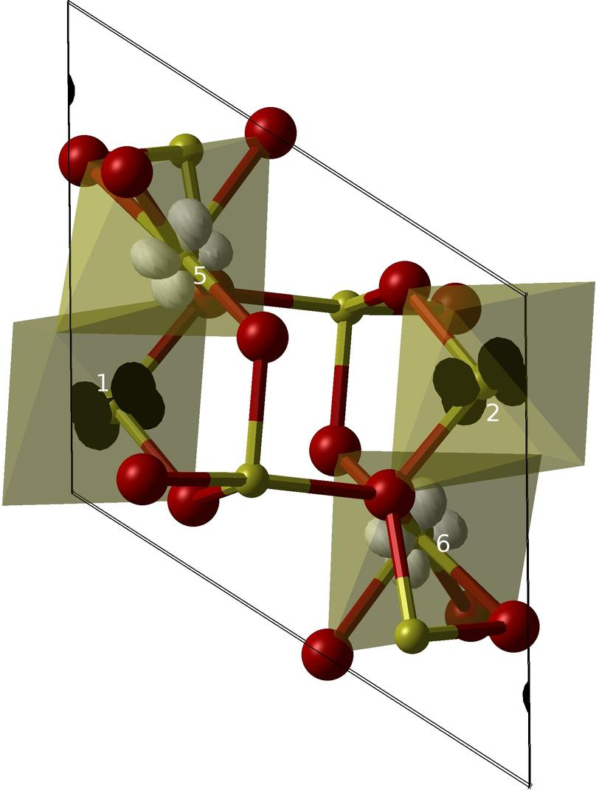
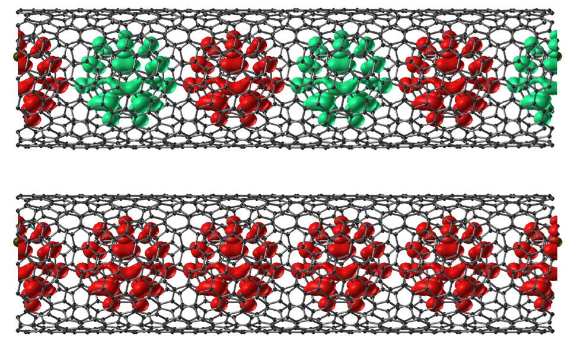
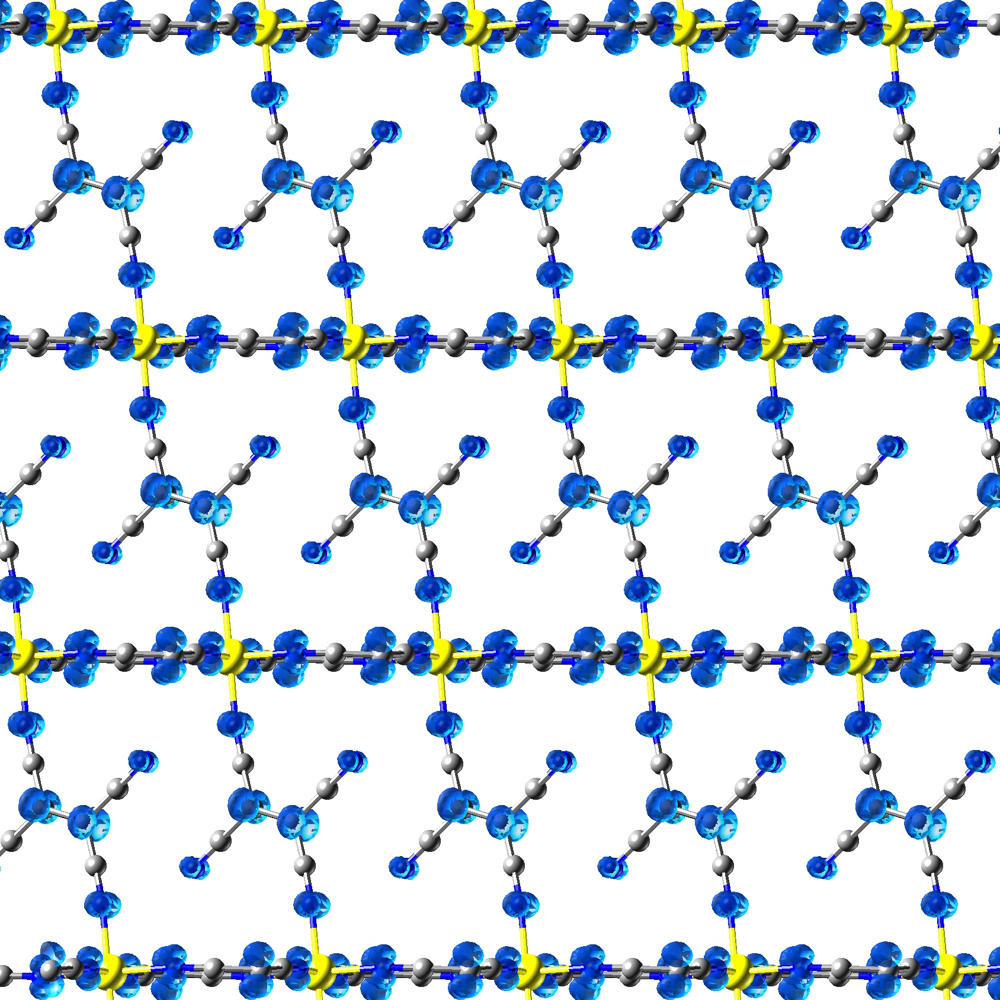
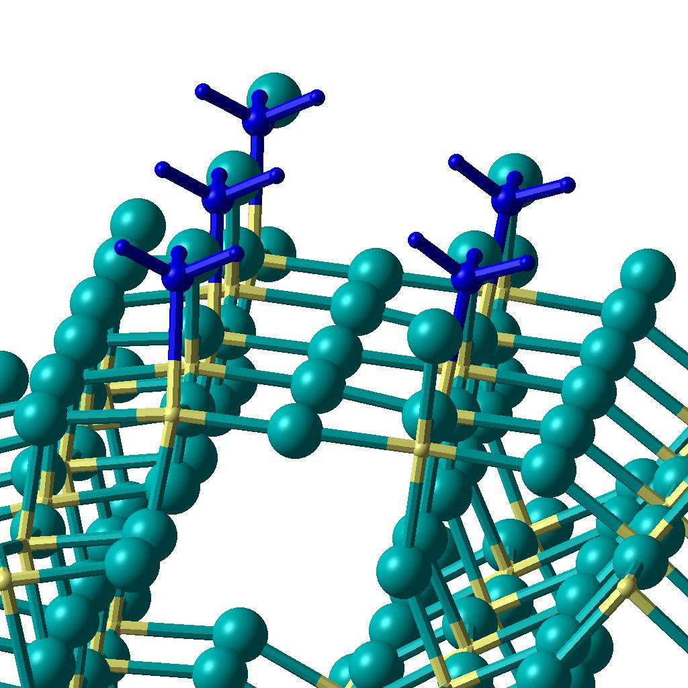

Current projects include:
Magnetism in Organic MaterialsStability of the Ferromagnetic State in a Mixed sp2-sp3 Carbon SystemL Pisani, B Montanari, NM Harrison Phys. Rev. B 80 104415 (2009) |
 |
2D MaterialsStructural Transformations in Graphene Studied with High Spatial and Fast Temporal ResolutionJH Warner, MH Rummeli, L Ge, T Gemming, B Montanari, NM Harrison, B Buchner, GAD Briggs Nature Nanotechnology 4 500 (2009) |
 |
Orbital Ordering and Magnetism in Strongly Correlated SystemsThe Metal-Insulator Transition in the Ti4O7 Magneli PhaseL Liborio, G Mallia, NM Harrison Phys. Rev. B 79 245133 (2009) |
 |
Spin Transport in Carbon Peapod StructuresEffects of Doping on Electronic Structure and Correlations in Carbon PeapodsL Ge, JH Jefferson, B Montanari, NM Harrison, DG Pettifor and GAD Briggs, ACS Nano ASAP (2009) DOI 10.1021/nn8008454
Modelling Spin Interactions in Carbon Peapods using Hybrid Exchange Density Functional Theory
Dynamics of Paramagnetic Metallofullerenes in Carbon Nanotube Peapods |
 |
Molecular Magnetism and SpintronicsDensity functional study of the magnetic coupling in V(TCNE)2Giulia C. De Fusco, Leonardo Pisani, Barbara Montanari, Nicholas M. Harrison , Phys. Rev. B. 79 085201 (2009) |
 |
Computational Characterisation of Catalysts
Steps, Microfacets and Crystal Morphology: An ab initio Study of
β-AlF3 Surfaces,
Characterization of Lewis acid sites on the (100) surface of β-AlF3: Ab initio calculations of
NH3 adsorption,
Adsorption of HF and HCl on the β-AlF3 surface, |
 |
The group is involved in the development of software for predictive simulation, analysis of experimental data and visualisation. In particular;
- CRYSTAL.
An all electron Gaussian basis set code for the first principles simulation of periodic systems.- CASTEP.
A plane-wave, pseudopotential code for the first principles simulation of systems periodic in three dimensions.- DLVisualize.
A graphical user interface for a variety of materials simulation codes.- DL-EXCURV.
A new code for the interpretation of X-ray adsorbtion spectra.